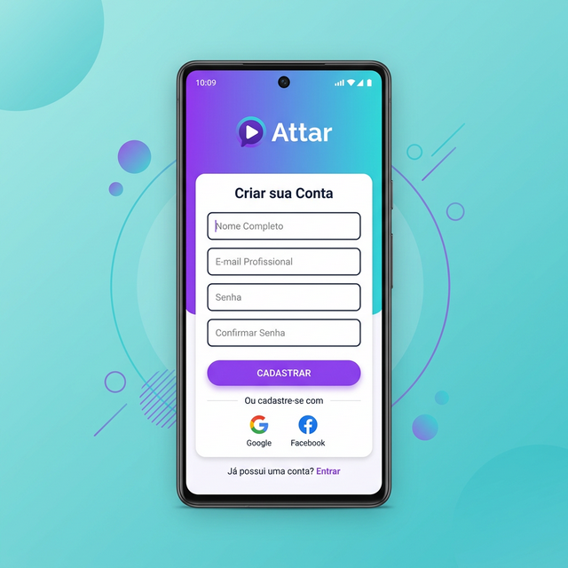

Cases & Portfólio
Conheça alguns dos projetos e experiências onde atuei, conectando design, tecnologia e as necessidades do negócio.

Redesenho de Menu e Homepage
Simplificando a experiência financeira para usuários da XP Investimentos.

INFLUO: IA no Creator Marketing
Transformando a descoberta de creators através de inteligência artificial generativa.

Attar: Recolocação Profissional
Plataforma mobile para conectar pessoas ao mercado de trabalho com Design Thinking.